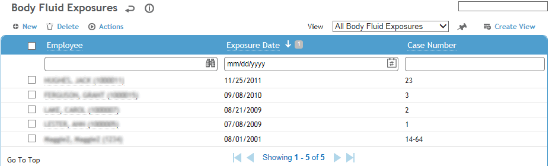
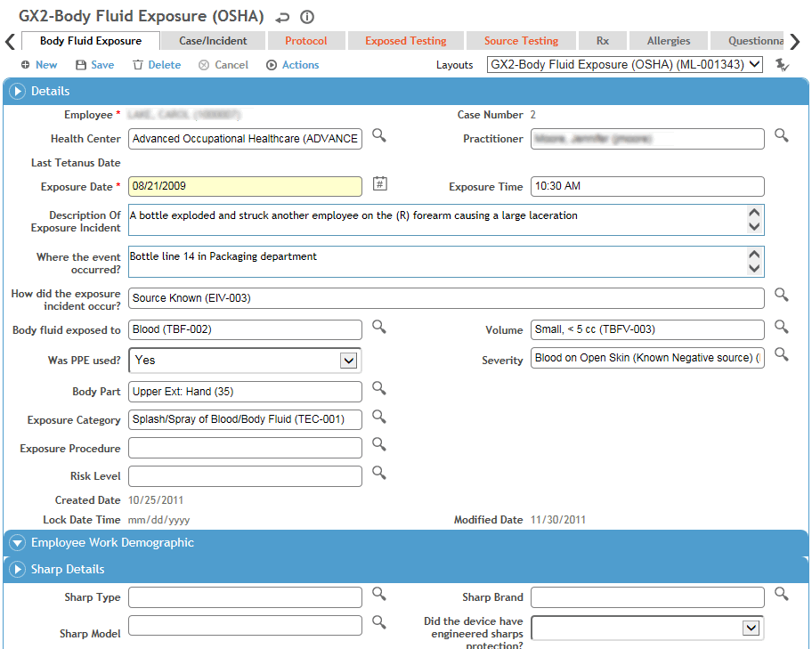
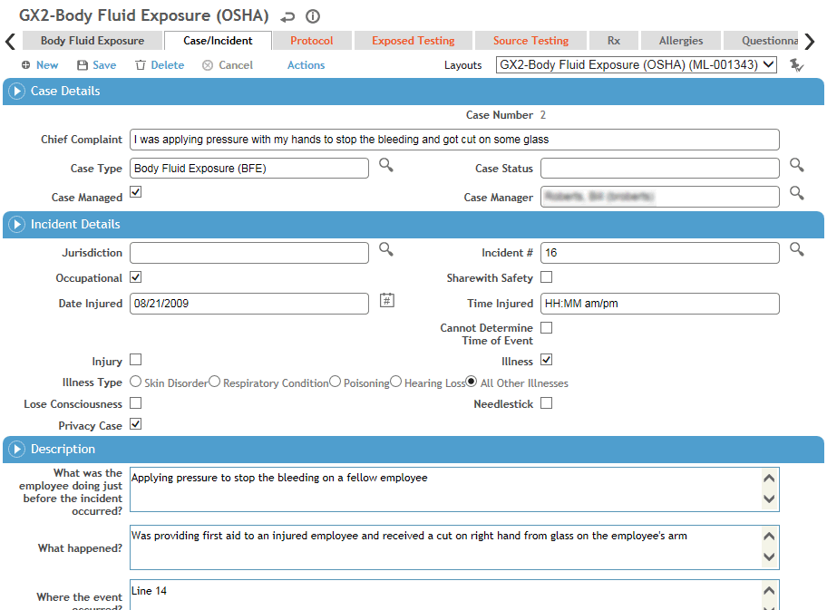

In the Occupational Health menu, click Body Fluid Exposure and use the provided fields to generate a list of employees who have been exposed.

Select a record from the list by clicking on the employee name, or click New to record a new exposure record.
Two or more employees may be involved in an exposure. For the purposes of this documentation, the employee exposed is referred to as “EE”, and the person(s) whose body fluids the EE was exposed to is referred to as the “source.”
Information about each body fluid exposure is entered in the following tabs:

Enter information about what happened:
Select the employee name (EE), if not already selected.
If the employee has any immunization records for immunization codes that include tetanus, the latest date is populated into the Last Tetanus Date field.
Record the specifics of the exposure.
In the Source Details section, enter information about the source of the body fluids, if known:
Enter the name of the source and the source’s medical record number.
If the source consented to be tested, record the tests and results on the Source Testing tab.
In the Exposed Details section, enter information about the employee exposed, such as whether the EE received counseling and consented to testing, as well as any outcomes as a result of the exposure. For example: if the EE’s medical condition changed (e.g. tested negative for HIV, then later tested positive), if any prophylaxis was recommended and accepted.
If the employee exposed consented to be tested, record the tests and results on the Exposed Testing tab. In many cases the tests done to the EE will depend on the test results of the source. For instance if the source is negative for HIV and Hepatitis A and B there is no reason to run these tests on the EE unless it is the policy of the institution.
Use the Additional Comments field to capture any narrative from the EE on the incident (e.g. an observation that proper procedures were not followed, or if a safety device could have prevented the exposure, or any actions or practices that could have prevented the exposure).
Click Save.
The Case/Incident tab allows you to record information which should be transferred to the Case and/or Incident module.

In the Details section, enter or edit the following information:
Date (and Time, if known) of injury/initial diagnosis, and Jurisdiction (only includes jurisdiction records flagged as an “Incident Reporting Jurisdiction” in the Jurisdiction table).
If the incident is Case Managed, select the checkbox and select the Case Type.
The layout may change depending on the Case Type selected. Conversely, if you change to a layout that includes a default case type, the Case Type will change.
If the exposure has occurred within the employee’s work environment, select the Occupational checkbox; a record will be created in the Incident module. If you are not ready to define the visit as Occupational, e.g. if the case is pending investigation, but you want to have the record available in the Incident module, select Share with Safety. See also Reporting an Incident.
Indicate if this case is an Injury or Illness. If you choose Illness, select the Illness Type.
Indicate whether the incident is a Privacy Case and whether a Needlestick injury occurred (Privacy Case is automatically selected if Needlestick is selected). If Privacy Case is selected, any automatically generated email messages will display “Privacy Case” instead of the employee name.
If the employee died, enter the date.
In the Description section, enter information about what happened in the fields on the left: i.e. what the employee was doing when injured; what happened, where the incident occurred, a description of the injury or illness, the object or substance that injured the employee. If the safety manager agrees with the fields on the left, select the Safety Agrees With Above checkbox; otherwise, complete the fields on the right. The fields on the left will populate the Employer’s First Report, and the fields on the right will populate the OSHA 301 report. If the Safety Agrees With Above checkbox is selected, the same information will appear on both reports.
If the employee received treatment away from the work site, in the Treatment Information section specify the location where treatment was given and indicate whether the employee was treated in an emergency room and/or was admitted to hospital.
Enter the appropriate Safety Classifications, including the Cause of Injury.
If the Cause of Injury code has been defined as Ergo Related, you are prompted to identify the incident as Ergonomic. If your user role matches the appropriate system setting (see Changing Your System Settings), you may choose Actions»Override Ergonomic Flag to set or clear this checkbox as necessary.
In the Claim Information section, record insurance claim details. These fields are transferred to the Incident and Case Management modules.
In the OSHA (US Only) section:
If the appropriate system setting is enabled, the OSHA Recordable checkbox is disabled from manual selection and will be selected automatically if the employee died or lost consciousness. Depending on your user role (defined in the system settings; see Changing Your System Settings), you can override this flag: choose Actions»Override OSHA Recordable Flag. If this action has been previously overridden, the Action text is displayed in red; another action allows you to view the history of such overrides.
If the appropriate system setting is not selected, users can select or clear the OSHA Recordable checkbox directly.
You must record all work-related needlestick injuries and cuts from sharp objects that are contaminated with another person's blood or other potentially infectious material—OSHA 29 CFR 1910.1030.
The Date became recordable is the visit date when the case became recordable.
If you want a red line to be displayed through this entry on the OSHA log, select Line Out on OSHA Log? and enter the Reason, your initials and the date.
Click Save. If you are recording a new occupational-related or non-occupational case-managed exposure record, you are prompted to confirm whether you want to send an email notification about the new case to the case manager or occupational department. (Email notifications are not available for revisits.)
The Protocol tab displays any recommended protocols that should be put into effect as a result of this exposure incident. For information about recording a protocol, see Recording Protocols.
The Exposed Testing tab lists any clinical tests and immunizations the EE has undergone. To view a particular test or immunization record, click its link. To create a new test or immunization, click the New button to link to the appropriate module. For more information, see Entering a Sample and Entering an Immunization Record.
Only clinical test batteries and immunization codes that have the Body Fluid Exposure checkbox selected are available when you access the Clinical Testing or Immunization modules via the Body Fluid Exposure module. For information on locating and setting up look-up tables, see ClinicalTestBattery and ImmunizationCode.
This tab displays any tests performed on the source. For information about recording exposure tests, see Recording Source Tests.
The Rx tab displays all medications and contraindications recorded for this employee in the Demographics, Body Fluid Exposure, Medical Chart, Clinic Visits, Clinical Testing, or Immunization modules. For information about entering a medication or contraindication, see Recording Medications (non-eRx).
The Allergies tab displays all allergies recorded for this employee in the Demographics, Body Fluid Exposure, Medical Chart, Clinic Visits, Clinical Testing, or Immunization modules. For information about entering an allergy, see Recording Allergies.
The Questionnaires tab allows you to associate questionnaires with a record. For information about creating and administering questionnaires, see Questionnaires.
Use the Actions tab to view or add corrective or preventive actions. For information about recording an action, see About Findings and Actions.
The Notes tab allows you to record additional information that does not fit elsewhere in the form. For more information, see Adding Notes to a Form.
Use the Documents tab to link an external file to the record to provide easy access to the file (for more information, see Linking or Importing a Document).
The Letters tab allows you to view past letters or generate new letters to employees. Form letters are stored in the LettersTemplate look-up table. For information about creating letters, see Generating a Letter.